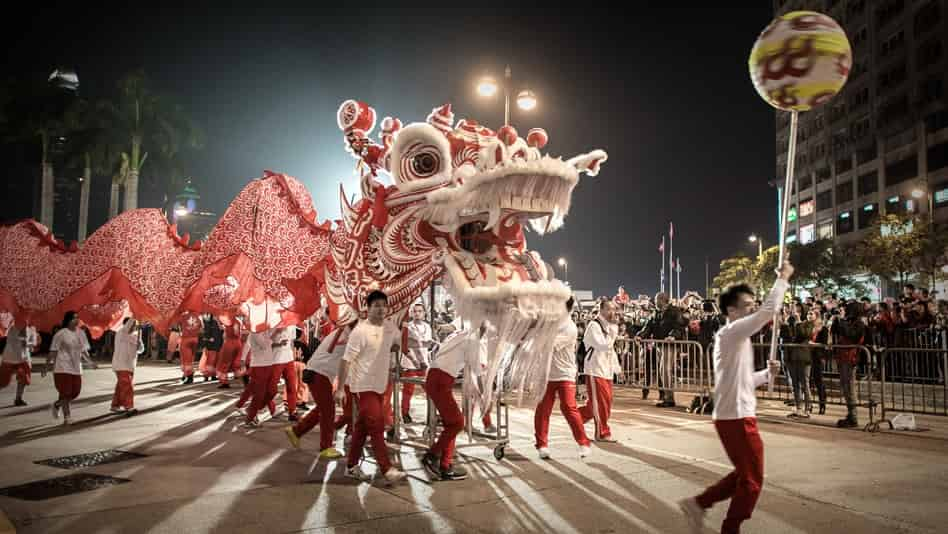

Rriguardo la Cina - La cultura
In questo menù vogliamo farti avvicinare alla cultura cinese. A causa della complessità di qualunque cultura, questo non può che essere una semplice introduzione. Di seguito ti parleremo dei due giorni festivi più importanti, dell’importanza del viso e delle relazioni interpersonali, delle dinastie religiose e filosofiche, della medicina orientale cinese e delle arti. Si hai il desiderio di ottenere maggiori informazioni o dati più dettagliati puoi trovarli in “LINKS E DOWNLOAD”.
La società cinese, ugualmente a qualunque altra, ha sviluppato le proprie abitudini e tradizioni e, anche se a volte, le città sembrano completamente traslocate dall’Asia all’Occidente, continuano a tenere le loro celebrazioni, tradizioni e giorni festivi.
I giorni festivi

In Cina vi sono una serie di festività che conosciamo anche in Europa, però solo per sentito dire. Anche se molti cinesi celebrano il Natale, il Giorno di San Valentino e l’Anno Nuovo nelle grandi città di oggi, il tipo di celebrazione differisce sostanzialmente da quella delle culture occidentali. La maggioranza dei giorni festivi in Cina si basano sul calendario lunare e non hanno una data fissa. In generale sorgono da secoli o tradizioni millenarie e solitamente si celebrano in compagnia degli amici più vicini e della famiglia. Alcuni dei più importanti sono i seguenti:
- La Festa di Primavera/Anno nuovo cinese:
La Festa di Primavera si inizia tutti gli anni tra il 21 gennaio e il 21 febbraio (alla seconda luna nuova dopo il solstizio d’inverno) e termina a cinque giorni dalla Festa delle Lanterne. Si tratta della celebrazione famigliare più importante della Cina, comparabile al Natale o all’Anno Nuovo per l’Occidente, e si celebra molto anche fuori dai confini cinesi. Un tempo centinaia di milioni di lavoratori migranti tornavano dalle loro famiglie per queste feste, e per questo è conosciuta come la “migrazione di massa più grande della storia”. In generale, si prepara una cena per ricevere il nuovo anno e si decorano le case con simboli rossi di buon auspicio e con l’animale dello zodiaco a cui è dedicato l’anno successivo. I membri della famiglia che non sono accasati, ricevono in regalo del denaro in buste di colore rosso, mangiano e bevono insieme e lanciano i fuochi artificiali. Come regola generale, il primo giorno si ospitano i parenti paterni, mentre i materni durante il secondo giorno. È inoltre molto comune in questi giorni onorare gli antenati e offrire loro dei regali. Non devi assolutamente perdere l’opportunità di celebrare questo festival nella cerchia della tua famiglia ospitante. Sono garantiti momenti indimenticabili.
- Qingming Festival:
Il Qingming festival è all'inizio di aprile ed è dedicato ai morti. Le tombe vengono pulite, si accende l'incenso agli antenati e si fanno offerte di frutta e carta da moneta, che viene bruciata più tardi.
- Festival del Dragon Boat:
Il Festival del Dragon Boat è celebrato tradizionalmente il quinto giorno del quinto mese lunare (a inizio giugno) con una gara di coloratissime dragon boat; il cibo tradizionale per questa occasione è lo "zongzi", cioè, riso avvolto in foglie. Secondo la leggenda, il festival risale al periodo degli Stati Combattenti, in cui Qu Yuan fu bandito dalla corte a causa delle sue opinioni politiche. Colpito dall’ingiustizia a lui fatta, saltò nel fiume Miluo, i residenti hanno cercato di salvarlo con le loro barche ma sfortunatamente lo sforzo fu invano.
- Il Festival della Luna o Mid-Autumn:
La Festa della Luna si celebra il quindicesimo giorno dell'ottavo mese lunare (tra i primi di settembre e inizio ottobre). In questo giorno, la luna piena è al meglio, e per festeggiare i cinesi cucinano una torta di luna dolce con vari ripieni e ne regalano una parte a familiari, amici e colleghi.
- Giornata Nazionale (1 ottobre):
Il festival nazionale inizia ogni anno il 1 ° ottobre e vuole commemorare la fondazione della Repubblica Popolare Cinese nel 1949. Dal momento che hai una settimana di riposo per questo festival, puoi farti un bel viaggio!
Ti consigliamo di prenotare in anticipo se desideri viaggiare durante questa festività cinese, perché sono in molti ad approfittare questo periodo per farse una vacanza.
Il Mianzi (volto) e Guanxi (influenze personali).

I concetti di “mianzi”, tradotto come “volto” ma in un senso sociale, che fa riferimento più alla reputazione e al prestigio di qualcuno che al volto in sè, e di “guanxi”, intesa come influenza personale di qualcuno nella società, sono presi dalla filosofia confuciana e rimangono i pilastri della vita sociale cinese. In generale si può dire che i cinesi sottolineano l'armonia interpersonale essendo il “volto”, la verità e il darsi agli altri le linee guida più importanti.
- Mianzi (“volto”):
Il “volto” di una persona è un simbolo di dignità e status sociale visibilmente evidente. Qualcuno che “ci mette la faccia” (come si dice popolarmente) aumenta il proprio status e può apparire come un essere benevolo e generoso, mentre il bugiardo e il vigliacco è considerato maleducato e immaturo. Quando sei in Cina, è molto importante fare attenzione a non criticare qualcuno di fronte agli altri, e se vuoi esprimere una divergenza di opinioni, devi dire in primo luogo, di aver capito la posizione e le idee altrui, e poi presentare le tue argomentazioni contrarie, in maniera molto rispettosa e serena. Un bel modo per adulare gli altri e farli stare confortevoli, è elogiare le loro politiche.
- Guanxi (influenza sociale):
L'importanza delle relazioni in Cina è emersa dalla sua storia accidentata, e le relazioni stabili per i cinesi sono più importanti delle leggi stesse. Se vuoi conoscere qualcuno, per esempio, è normale che un'altra persona te la presente prima. Si tratta di un trasferimento di fiducia. Se hai buoni rapporti con le altre persone, non devi avere paura di chiedere favori. A volte le cose che sembrano un po’ esagerate per gli occidentali, per i cinesi sono chiare e normali, ad esempio, gli amici sempre ti offrono un letto per dormire quando sei con loro in città. Oppure, se si inizia una discussione con opinioni diverse, si chiederà la mediazione di una terza persona per concluderla.
Questo significa anche che se hai l’intenzione di costruirti un futuro in Cina, la tua famiglia ospitante sarà sicuramente di aiuto o almeno te presenteranno qualcuno che può darti una mano.
Religione e Filosofia.

Anche se oltre il 90% dei cinesi sono ufficialmente descritti come non religiosi, le religioni e le credenze dei loro antenati hanno ancora una grande influenza sulla loro vita, e i templi in tutto il paese stanno vivendo una rinascita. Per i cinesi questa non è una contraddizione e nemmeno un problema, anche Deng Xiaoping, il padre della liberazione economica della Cina, ha detto: "Che mi importa se un gatto è bianco o maculato, l’importante è che acchiappi i topi" e, in antichi testi cinesi, non è raro leggere che i monaci confuciani, buddisti e taoisti si dessero consigli a vicenda.
Questo spiega anche come la filosofia del Fengshui è stata in grado di svilupparsi in tutta Cina, anche se tra una regione e l'altra, e da un insegnante all'altro, è molto diversa. Allo stesso modo, il Taoismo percorre molto la stessa linea della medicina tradizionale cinese, che considera l'uomo come unità di corpo e mente, legato alla natura, o l'uso di concetti come yin e yang, o, infine, l’energia vitale chiamata anche “Qi”. Allo stesso modo, la religione e filosofia tradizionale condivisa tra Buddismo, Taoismo e Confucianesimo, fa sfumare i confini di questi in molte scuole.
- Confucianesimo:
“Kongzi” oppure “Confucio” (551-479 aC) era figlio di una famiglia aristocratica, nata durante il periodo di “Primavera e Autunno”, nello stato di Lu (ora provincia di Shandong). Dopo la morte di sua madre, ha lasciato il suo lavoro per insegnare la sua filosofia.
Il Confucianesimo da importanza all’individuo nella società e alla sua attuazione che deve essere appropriata in relazione a questa posizione. Ha cercato di ricuperare le lezioni dal passato, osservando i tempi che ha vissuto in guerra, come il declino della civiltà, e ammirava molto le dinastie pre-cristiane. Confucio non scrisse mai nulla riguardo alla sua filosofia, per ciò quello che abbiamo oggi sono solo scritti dei suoi studenti.
I cinque principi essenziali che dovrebbero guidare la persona:
- Ren (l'umanità) richiede di fare delle azioni benevole tra le persone, ma stabilendo prima chi merita queste rispetto e chi, invece, non le merita.
- Li (rituale) sottolinea i rituali nelle relazioni umane, si deve agire con gentilezza e con buone maniere.
- Xiao (fedeltà ai genitori) esige obbedienza e rispetto per i genitori, gli antenati e gli insegnanti. Il più forte “Xiao” è tra padre e figlio, ed è anche al di sopra della legge.
- Zhong (fedeltà) è il trasferimento della “Xiao” sul piano professionale. Fedeltà non vuole dire obbedienza cieca, si può consigliare un superiore su cosa è corretto e cosa non lo è.
- Junzi (nobile): l'obiettivo di ogni individuo deve essere diventare un perfetto gentiluomo, applicando i principi menzionati in ogni situazione della vita.
- Il Taosimo:
Le sue origini non sono chiare, perché prese forma come religione solo durante la dinastia Tang (618-907 d.C.). L’opinione più estesa è che Lao Tse, che ha vissuto nello stesso periodo di Confucio, fondò il Taoismo con il suo libro, il Tao Te Ching (lo Scritto sul Cammino e sulla Virtù). Lao Tse era archivista dello Stato di Ku e abbandonò il suo lavoro per viaggiare nel Paese. Non fondò il Taoismo intenzionalmente, ma semplicemente scrisse il suo punto di vista sul mondo. Solo più tardi il Taoismo fu fortemente influenzato dagli scritti di Zhuangzi e dal Buddismo, prestandogli i suoi dei e rituali.
Il Taoismo non proponeva o criticava alcuna forma particolare di società, ma si ispirava al ritorno dell’uomo verso la natura. Nel Tao Te Ching si dice: “Quanti più tabù e proibizioni avrà il mondo e tanto più povera sarà la gente”. L’idea principale del Taoismo gira intorno al Dao, la forma di una forza senza fine che non si può capire, ma che si osserva nella natura. Lo Yin e lo Yang, le due forze opposte e indipendenti, vengono al mondo attraverso il Dao e sono presenti in tutte le cose, bilanciandosi come la marea.
Le linee guida del Taoismo sono:
- Wuwei (senza obiettivo): l’uomo deve agire senza intenzione e lasciare che le cose accadano;
- Ziran (la natura): propone di mettere in atto un accordo con ciò che è naturale e spontaneo. Wuwei e Ziran sono interdipendenti, Wuwei è la capacità di apprezzare la natura dell’altra persona, Ziran, il quale, a sua volta, ci permette di agire in accordo con Wuwei;
- San Bao (i tre tesori): Jing, la forza vitale, Chi, l’essenza dell’essere e Shen, l’intelletto e la spiritualità. Solo colui che possieda questi tre tesori in armonia potrà raggiungere la vita eterna.
Si raccomanda ai membri della cultura occidentale che diano un’occhiata indietro nel tempo per comprendere quanto romantica sia la visione taoista della natura.
- Il Buddismo:
Siddhartha Gautama (colui che raggiunse la sua meta, 563-483 a.C.) nacque come principe in Kapilavastu (Nepal). Dopo aver visto per la prima volta la sofferenza del mondo, lasciò il palazzo all’età di 29 anni per trovare la Verità più elevata e un modo per uscire dalla sofferenza. Dopo alcune meditazioni infruttuose si sedette sotto un albero fino a riuscire a conseguire il suo obiettivo. Questo avvenne all’età di 35 anni e, a questo punto, si convertì in Budda (colui che è sveglio) e passò il resto della sua vita ad insegnare il suo pensiero.
La vita del Budda non fu scritta fino a 500 anni dopo la sua morte, e il Buddismo si propagò in Cina proprio in questi periodi. La tradizione confuciana era forte, e il Buddismo, come il Taoismo, non mise le sue radici fino alla dinastia Tang (618-917 d.C.).
Il Buddismo sorse dall’Induismo, il quale insegna che la vita è un ciclo senza fine, dopo la morte vi è una rinascita. Tutto ciò che rinasce dipende dal suo Karma, ovvero, dalla somma di tutte le buone e le cattive azioni, le parole e i pensieri. Il Buddismo offre una maniera per uscire da questo ciclo di infinite rinascite in accordo con le Quattro
Nobili Verità:
- Tutta la vita è sofferenza;
- La sofferenza nasce dal desiderio;
- Resistere al desiderio conduce alla cessazione della sofferenza;
- Questo può essere raggiunto attraverso l’Ottavo Cammino.
L’Ottavo Cammino comprende la vera opinione, la vera intenzione, la buona condotta della vita, il verso sforzo, il vero pensiero e la vera aspirazione.
Coloro che dominano l’Ottavo Cammino potranno raggiungere il Nirvana (stato di appagamento). Secondo la confessione Buddista, è possibile ritornare dal Nirvana al circolo della vita e alla reincarnazione. A questo si è data particolare importanza nel Lamaismo e si considera il Dalai Lama come la reincarnazione degli illuminati Avalokitesvara (coloro della compassione).
- Fengshui:
Gli insegnamenti del Feng Shui, a volte, sono molto differenti da regione a regione e da un maestro all’altro. Anche se alcuni punti centrali del Feng Shui sono già stati documentati in tempi precristiani, il suo nome deriva dalla dinastia Song (960- 1279 d.C.). L’idea di base in comune è che la vita non dipende solo dalla propria morale o dai propri successi, ma anche da altre forze. Queste forze sono il Qi, lo Yin e lo Yang, i demoni, gli spiriti, i propri antenati, gli dei e altro ancora. I maestri del Fengshui forniscono orientamento in relazione ai poteri perché questi permettano una vita felice. Specialmente in Cina vengono consultati questi maestri in molte occasioni, come per stabilire la data di un matrimonio, il nome adeguato per i propri figli ecc..
La medicina cinese tradizionale (MCT)

La medicina occidentale non è arrivata in Cina prima del 19’ secolo. La medicina tradizionale cinese era praticamente l’unica fonte di cure sanitarie, e questa, si focalizza a livello olistico e fa ampio uso di erbe, agopuntura e massaggi. È strettamente connessa con la filosofia cinese, senza la quale non si potrebbe capire. Dal 1950 circa la MCT sta guadagnando molto terreno anche in Occidente come una forma di medicina alternativa.
La MCT si è sviluppata lentamente, durante migliaia di anni. Il primo trattamento di agopuntura è stato messo appunto nel 2800 a.C. Durante le dinastie precristiane si crearono le prime raccolte di erbe e trattamenti, costituendosi così in una medicina indipendente. Anche se i principali concetti della medicina tradizionale cinese si stavano già sviluppando durante la dinastia Han (210 a.C. – 220 a.C.), non si può attribuire il termine “medicina occidentale tradizionale” prima del 1960. Per ordine di Mao Zedong si realizzò una classificazione scientifica per i trattamenti individuali, in modo da riuscire ad ottimizzare i prezzi e fornire attenzione medica alla popolazione rurale di quel periodo.
Lo scopo del trattamento nella medicina cinese è sempre stata olistica. Questo significa, da un lato, che non si può considerare una parte del corpo da sola, e, dall’altro, che il paziente non può essere visto isolatamente dall’ambiente che lo circonda e dalla società. Per questo non è sufficiente esaminare il paziente solo fisicamente, ma è altrettanto necessaria un’inchiesta sulle circostanze e sul contesto in modo approfondito.
L’intercambio tra la medicina tradizionale cinese e la filosofia si può vedere solo nel testo dei modelli esplicativi. I concetti chiave come il Qi, lo Yin e lo Yang, provengono dal pensiero taoista e il modello dei cinque elementi si può incontrare di nuovo nel Fengshui:
- Qi:
Qi è l’essenza dell’essere. Tutto l’universo è inondato dal Qi, che è in un flusso perpetuo e unito al Dao. Quando il Qi si condensa crea gli oggetti e gli essere viventi come le rocce, gli uccelli o gli esseri umani. Questo significa anche che tutto è interconnesso attraverso il fluido Qi. I suoi movimento provocano dei cambiamenti quali sono le stagioni e quando esso evapora termina quello che per noi è un essere tangibile.
- Lo Yin e lo Yang:
Lo Yin e lo Yang segnano i poli opposti di una proprietà. Lo Yin rappresenta la continuità, la passività, il freddo, l’umidità, l’oscurità e l’interiore; lo Yang è l’opposto, ovvero l’attività, il calore, la secchezza, la leggerezza e l’esteriore. Tutto può essere classificato attraverso i concetti di Yin e Yang. Non si possono considerare come il bene e il male, si può solo fare una classificazione in base alla relazione che c’è tra i due. Vi sono cinque relazioni basiche tra lo Yin e lo Yang:
- Interazione tra Yin-Yang: è cruciale per la creazione di tutte le cose tangibili. Un esempio di questo sono le relazioni sessuali tra uomo (Yin) e donna (Yang);
- Contrasto tra Yin-Yang: mediante il contrasto si può conseguire l’equilibrio. Per esempio, lo Yin ci permette di riposare la notte e lo Yang di mantenerci attivi durante il giorno;
- Dipendenza tra Yin-Yang: non possono vivere l’uno senza l’altro. Per esempio, un’azione (Yang) non è possibile senza il corpo (Yin), allo stesso modo senza l’azione, come mangiare o bere, non può vivere il corpo;
- Crescita e diminuzione di Yin e Yang: quando lo Yin aumenta, lo Yang deve diminuire della stessa quantità, in questo modo si mantiene un equilibrio quantitativo;
- La trasformazione dello Yin e dello Yang: durante la crescita o la diminuzione, cambia il carattere dominante e può cambiare in direzione dell’uno o dell’altro. Per esempio, il corpo umano che converte i nutrimenti (Yin) in energia e azione (Yang).
Per fare una diagnosi nella medicina cinese tradizionale, è essenziale tenere in considerazione la relazione tra lo Yin e lo Yang, dal momento che possono sorgere malattie quando questi sono perturbati.
- I cinque elementi (Wu Xing):
Nella medicina tradizionale cinese le interazioni si discutono in riferimento ai cinque elementi, che sono gli stessi anche per tutti gli organi del corpo. Questi sono: il legno (il fegato), il fuoco (il cuore), la terra (i vasi), il metallo (i polmoni) e l’acqua (i reni). Tutti questi elementi sono connessi tra loro attraverso i concetti di inibizione e creazione, per garantire l’equilibrio della natura. Un esempio: la terra partecipa all’acqua, l’acqua produce il legno e a sua volta il legno partecipa alla terra. Allo stesso modo i cinque elementi hanno i loro processi: l’acqua va verso il basso, il fuoco sale verso l’alto, il legno si espande, il metallo si dilata e la terra permette la crescita. Allo stesso modo dello Yin e dello Yang questi processi sono relazionati con l’uomo stesso e con l’ambiente. Quando si produce una perturbazione di questo equilibrio viene a crearsi una malattia e bisogna applicare un qualche trattamento.
L’arte

Anche l’arte cinese non è per niente inferiore a quella di altri paesi. La maggioranza delle persone, quando pensa all’arte cinese, immagina la pittura, la seta, la calligrafia o la musica classica cinese, di fatto, però, c’è molto altro. Le arti marziali cinesi tradizionali e le acrobazie contemporanee sono di fama mondiale. Shangai con la M50 o Pekino con la 798 hanno grandi artisti e stabilimenti dove si può vedere dell’arte contemporanea gratis, senza dover pagare l’entrata. La musica cinese moderna, chiamata “Mandopop” viene ascoltata in molti bar e ristoranti ed è orientata alla musica occidentale. La letteratura cinese e i film sono spesso oggetti di dibattito e vengono criticati dalla società. Specialmente in Cina, l’arte si è sviluppata molto rapidamente, e senza sovvenzioni come invece è capitato nelle nazioni industrializzate occidentali. In molti teatri di grandi città, spesso, vi sono opere con temi di attualità, musical e anche classici. Anche passando un intero anno a Pechino sarà impossibile vedere tutto.
È impossibile parlare di tutte le forme di arte, e anzi, si può dire che le abbiamo tutte menzionante nei nostri menù, ma per trovare maggiori informazioni su luoghi e abitudini ancora più interessanti ti invitiamo a visitare la voce del menù “LINKS E DOWNLOAD”.